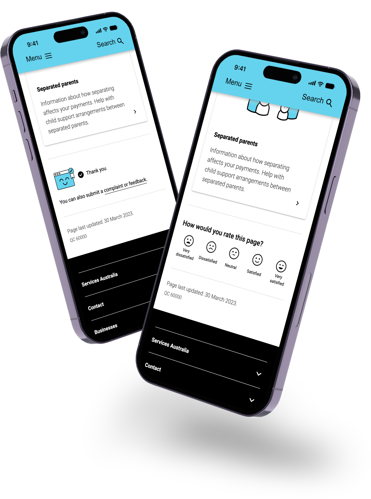

Sarah Ahmad
I’m Sarah, an interaction designer who creates practical UX solutions to curate experiences that are more fun and easy to use. I love using my skills to help make design accessible for all.
Open to opportunities
Projects
SERVICES AUSTRALIA
Page Poll Redesign
UI COMPONENT DESIGN | FEEDBACK MECHANISMS
Time frame: 7 months
Redesigning the Page Poll on the Services Australia website to capture more meaningful user feedback for customers and data analysts.


UNIVERSITY MAJOR STUDY
Root
UI/UX DESIGN
Time frame: 3 months
Using a garden-based visual metaphor to represent file management systems.
SERVICES AUSTRALIA
Alerts Redesign
UI COMPONENT DESIGN
Time frame: 5 months
Redesigning Services Australia alerts to better reflect urgency and accommodate multiple alerts.

Experience
Services Australia
Web Interaction Design Officer
2025 - Current
Awards
University of Canberra Creative Competition
Digital Media and Game Design Winner
2023
University of Canberra
Dean's Excellence Award
(Semester 1 2024, Semester 2 2024, Semester 1 2025, Semester 2 2025, Semester 1 2026)
2024 - 2026
About me
Hi there! I’m Sarah, and I’ve always loved being creative and using my skills to solve problems while adding a sense of novelty. After finishing my Bachelors degree in Interaction Design at the University of Canberra, I am looking for something exciting to work on.